San Francisco
A Day in Fog City

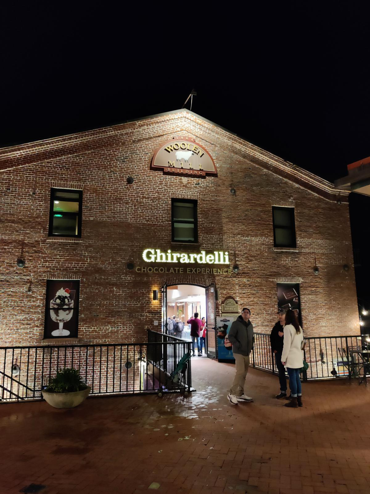


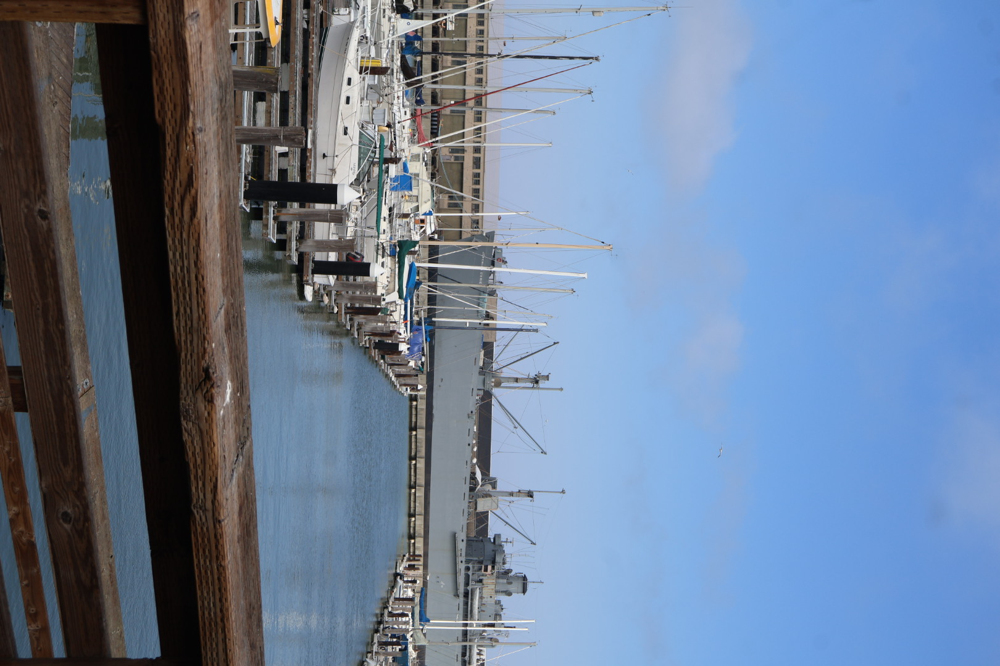
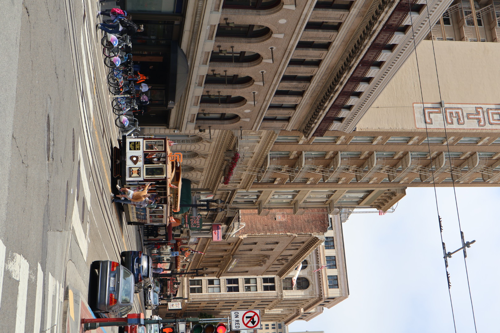
.jpeg)
.jpeg)
.jpeg)
Our day in San Francisco started with one of the most interesting streets I’ve ever seen Lombard Street. It’s that super curvy road with flowers on both sides, and honestly it looked almost unreal in person. I even opened the sunroof of the car while going down, and that whole moment just felt really good slow, windy, and kind of unforgettable. After that we stopped for lunch and took a short break. Then we went to Ghirardelli Square. That chocolate place was really nice especially the ice cream, it was genuinely so good. Just a simple stop but I enjoyed it a lot. Next we reached Union Square. It was very busy, lots of people and energy everywhere. From there we took e-bikes, and that honestly turned out to be one of the most fun parts of the day. Riding through the city like that felt really free and easy. We also passed through Chinatown San Francisco which was super colorful and crowded. After that we also took a tram ride, which had a very classic San Francisco feel simple but nice in its own way. Then we went to Pier 39. It was quite crowded but still really fun. We clicked some pictures in a photo booth there which turned out pretty funny. From there you could also see Alcatraz Island in the distance, which felt kind of crazy knowing its history. Later in the day we went to the Golden Gate Bridge definitely the highlight. The weather was cloudy, so the bridge kept going in and out of the fog. But whenever it cleared, it looked unreal. We also saw some details about how it was built and the engineering behind it, which made it even more interesting. We stopped for coffee nearby because it was cold and windy, and it just matched the vibe perfectly. At the end we visited the Palace of Fine Arts. That place felt really calm compared to the rest of the day. It was also familiar because it has appeared in movies like My Name Is Khan.

New York
City of Skyscrapers


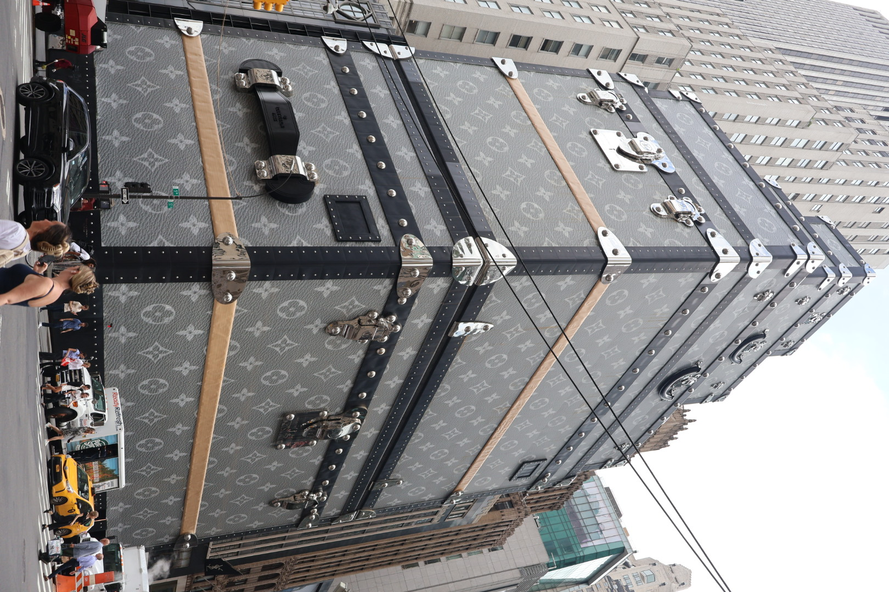
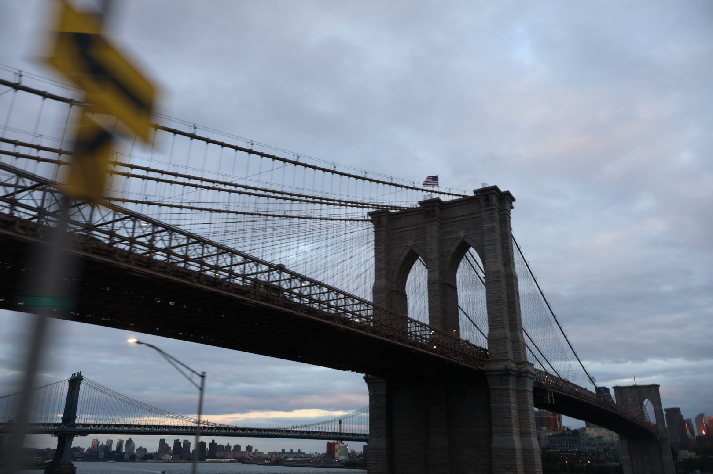

.jpeg)
New York was the second destination of my trip and honestly one of the most memorable ones. It was my first trip with my sister and brother-in-law, and also my first domestic flight in the USA. We took a red-eye flight to JFK Airport and reached New York in the afternoon.
After landing, we had lunch and then went back to the airport to pick up my brother. Later, we drove to our relatives' place in New Jersey, where we were staying.
Day 1
The next morning, we took a bus from New Jersey to New York. The bus dropped us near Times Square, and finally seeing Times Square in real life felt exciting. It was crowded, bright, and exactly how you see it in videos and movies.
From there, we walked around 5th Avenue and explored different stores. One thing that really caught my attention was the giant Louis Vuitton suitcase installation. It looked huge and was hard to miss.
After that, we took a cab to Central Park.
And wow... Central Park was beautiful.
I had seen so many photos and videos before, but being there felt completely different. There were so many famous spots. I don't remember all of them, but I instantly recognized the Bethesda Fountain from Kal Ho Naa Ho. It felt funny and exciting standing at a place I had only seen in movies.
After exploring the park, we took the Roosevelt Island Tramway. The views during the ride were amazing. Seeing the city from above was such a cool experience.
Later, we took a ferry and honestly, this was one of my favorite parts of the day. The skyline, the bridges, the water, everything looked so beautiful. It's one of those experiences that's difficult to describe properly.
After the ferry ride, we explored the World Trade Center area, saw the Charging Bull and the Fearless Girl statue. We even got one of our pictures printed on an old newspaper-style souvenir, which was pretty fun.
By the end of the day, we were literally rushing to catch the last bus back to New Jersey. Thankfully, we made it on time. We were tired but had already packed so much into the first day.
Day 2
The next day was all about the Statue of Liberty.
We got ready early in the morning and headed for the ferry to Liberty Island. While we were on the ferry, it suddenly started raining. Everyone quickly rushed downstairs to avoid getting wet. The rain lasted only a few minutes, but it made the whole ride even more memorable.
As soon as the rain stopped, everyone ran back to the upper deck to enjoy the views again.
When we reached Liberty Island, we spent a lot of time taking photos and videos. Since it was summer, there were tourists everywhere, and finding a good photo spot wasn't easy.
While we were there, my sister told me that if we had planned the trip a month earlier, we could have booked tickets to go inside the crown of the Statue of Liberty. I immediately wished we had known that before. The view from there must be incredible.
We visited a few more places during the day, but the best part was still left.
After the Statue of Liberty, we visited the Vessel. I had seen it many times in pictures and on social media, but seeing it in real life was different. The structure looks really unique and huge when you're standing next to it. Its honeycomb-like design and the way the staircases rise and connect make it stand out even more. We spent some time there taking pictures and just looking at the design.
Then we headed towards another iconic landmark the Brooklyn Bridge.
Seeing it in person was amazing. The bridge is incredibly well built, and walking across it while looking at the Manhattan skyline was such a nice experience. What made it even more special for me was that I remembered seeing it in the Bollywood movie Kal Ho Naa Ho, it was exciting to stand at a place that had appeared in one of my favorite movies.
We also visited DUMBO (Down Under the Manhattan Bridge Overpass), one of the most popular photo spots in New York. This is the place where you can see the bridge perfectly framed between two buildings. It was crowded, but the view was absolutely worth it.
Nearby, we explored Brooklyn Bridge Park and saw the famous Jane's Carousel. The area had beautiful views of the Manhattan skyline, and it was a nice place to relax for a while after all the walking. Between the bridge views, the waterfront, and the skyline, this ended up being one of my favorite parts of the day.
That night, we went back to Times Square.
What I didn't know was that my sister and brother-in-law had planned a surprise for me. Suddenly, our photo appeared on a Times Square billboard.
I was genuinely shocked.
Out of everything we did in New York, that moment is probably the one I'll remember the most. It was completely unexpected and made the trip even more special.
We finally reached home around 2 AM.
NEXT STOP: DC
Day 4
After getting back from D.C. the previous night, we decided to keep the next day pretty relaxed. The last few days had been hectic, so it felt good to slow down a little. We only had a couple of places left to visit in New York before heading to our next destination.
One of them was The Edge skyscraper, and honestly, it was one of the coolest experiences of the trip.
As we entered the building and got into the elevator, it started going up incredibly fast. The higher we went, the more exciting it felt. When the elevator doors finally opened, we were greeted with an unbelievable view of New York City.
Standing on The Edge's observation deck felt surreal. We could see skyscrapers all around us, the river flowing through the city, tiny cars moving on the roads below, and the famous New York skyline stretching into the distance. It was one of those moments where you just stop, look around, and appreciate how incredible the view is.
Of course, we spent a lot of time taking pictures and videos because a view like that definitely deserved it.
Compared to the previous days, this day was much more relaxed, and I actually enjoyed that. It gave us time to soak in the city one last time before leaving.
After visiting a few more places, we packed our bags and said goodbye to New York.
NEXT STOP: Boston

Boston
From Land to Water: Boston Duck Tour


We reached Boston in the evening from New York. Since it was already getting late, we didn't do much that day and just rested for the next day's plans. The next morning, we went for the Boston Duck Tour. It is very famous because it takes you around the city on both land and water while covering many of the main attractions. There was also a tour guide who kept explaining the history of different places and sharing interesting facts throughout the ride. My favorite part was when the vehicle entered the water. They asked if anyone wanted to drive, and a few people got the chance. Whoever drove received a Boston Duck Tour sticker, which was a fun little souvenir to take home. After the tour, we visited Northeastern University, where my brother-in-law completed his master's degree. It was nice to see the campus and the place where he studied. That was pretty much our day in Boston. Later, we headed to the airport and took our flight back to San Francisco. Even though it was a short trip, it was a fun experience and a nice way to end our journey.

Washington DC
Historic city visit


Day 3
After sleeping for only a few hours, we woke up early and headed to Washington, D.C.
The day before had been hectic, but we didn't want to waste any time. We explored the city using e-bikes and visited famous places like the Lincoln Memorial, the White House, and several other historic landmarks.
It was a different vibe compared to New York—less crowded and more focused on history but I really enjoyed it. Riding around the city and stopping at different monuments made the experience even better.

Vegas
Lights, shows & adventure


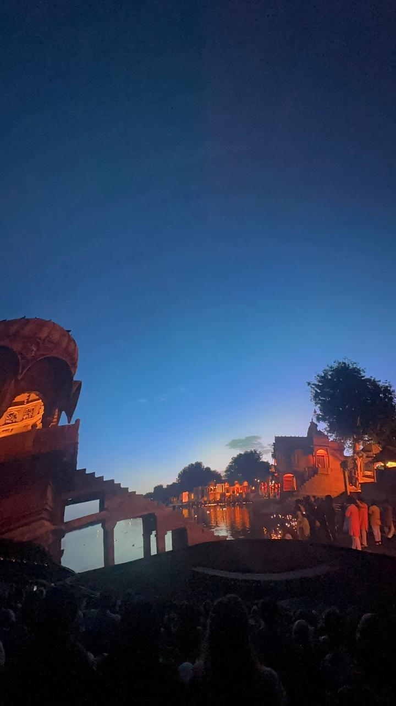
After coming back to Fremont, we already had our Las Vegas trip planned. This time the group was even bigger around 7 of us were going together, which made it even more exciting.
Day 1
We boarded our flight and as we got closer to Nevada, I couldn't stop looking out of the window. The view completely changed compared to California. All I could see were mountains, rocky landscapes, and desert-like terrain stretching for miles. It was my first time seeing that kind of scenery from a plane.
After landing in Las Vegas, we headed straight to our hotel The Paris Las Vegas.
The hotel itself felt like a mini Paris. The streets, architecture, cafés, and of course the Eiffel Tower replica made it feel like we had stepped into another country. We spent some time resting before heading out in the evening.
For dinner, we decided to explore the Las Vegas Strip as well. One of our first stops was the High Roller. Before visiting, I thought it would be like a normal giant wheel, but it was much more than that. The cabins were huge and comfortable, and as it slowly moved higher, we got amazing views of the entire city. Seeing Las Vegas lit up at night from above was such a cool experience.
After that, we walked around the Strip, explored nearby hotels, and enjoyed the lively atmosphere. Everywhere you looked there were lights, music, and people having fun. It felt like the city never slept.
Day 2
One thing I loved most about Las Vegas was how every hotel had a completely different theme and vibe. It almost felt like visiting different parts of the world without leaving the city.
We started the day by visiting Madame Tussauds. The wax statues were so realistic that sometimes it was hard to tell whether it was a statue or an actual person standing there. We spent quite a lot of time taking pictures with different celebrities and famous personalities.
After that, we visited The Venetian. The hotel was beautiful and probably one of my favorites. We took the famous gondola ride inside the hotel and explored the surroundings. The canals, bridges, painted sky ceiling, and architecture really made it feel like we were walking through Venice.
But the highlight of the day was still waiting.
In the evening, my sister and brother-in-law surprised us with a helicopter ride over Las Vegas.
When we reached the helipad, I requested the staff if it was possible for me to sit near the pilot. I honestly didn't expect it to happen, but somehow they arranged it.
I was so excited.
This was my first helicopter ride ever, and sitting near the front made it even more special. As soon as we took off, the entire city lit up beneath us. From above, we could clearly see the famous hotels, the Sphere, stadiums, and the bright Las Vegas Strip glowing in the night.
The view was absolutely unreal.
It's hard to explain how happy I felt at that moment. It was one of those experiences that you know you'll remember for a very long time.
After the ride, we headed back towards the hotel and explored a few nearby places. Near our hotel, we watched the famous Bellagio Fountain Show. Hundreds of people had gathered just to watch it. The combination of music, lights, and perfectly synchronized water fountains was beautiful to watch.
Day 3
After an amazing previous day, we were excited for one of the attractions I had been looking forward to the most — The Sphere.
We watched Postcard from Earth, and honestly, the experience was on another level.
The visuals were so realistic that it genuinely felt like we were inside the scenes rather than watching a screen. But what impressed me even more was the Sphere itself. The technology was incredible. The seats moved and added effects that matched what was happening on screen, making the experience even more immersive.
The documentary showcased nature, landscapes, cultures, festivals, and cities from around the world. One moment you felt like you were standing in a desert, and the next you were surrounded by oceans, forests, or city skylines.
One of my favorite parts was seeing India featured. Watching Mumbai's skyline, Marine Drive, Chhatrapati Shivaji Terminus, and festivals like Diwali and Holi on such a massive screen made me feel proud and excited at the same time.
The entire experience was unlike anything I had ever seen before.
If I could give one small piece of advice, it would be this: whenever you visit a place that has a documentary or immersive show, don't skip it. Sometimes those experiences turn out to be even more memorable than the tourist attractions themselves.
And if you've ever watched Postcard from Earth at the Sphere, you'll probably understand exactly why I can't stop talking about it.

Carmel by the Sea
Straight out of a fairy tale


## Carmel-by-the-Sea Carmel by the Sea was probably the first fairy-tale town I have ever seen. The moment we entered the town, I could feel that it was different from the other places we had visited. Everything looked cute and aesthetic. The shops, houses, gardens, and even the streets had a charm of their own. It felt like a place straight out of a storybook. The fairy-tale cottages were my favorite part. They looked so unique and beautiful, and honestly, some of them didn't even feel real. We spent some time just walking around and exploring the streets. There were small galleries, pretty gardens, and cute little statues everywhere. Even without doing much, it was enjoyable just to walk around and take in the atmosphere. What I liked most about Carmel was its vibe. It felt peaceful, joyful, and different from the busy cities. Every corner seemed picture-perfect, and it was one of those places where you end up taking photos without even realizing how many you've clicked. Out of all the places I visited during the trip, Carmel by the Sea was definitely one of the most charming and unique.

Big Sur
Along California's Most Scenic Coast


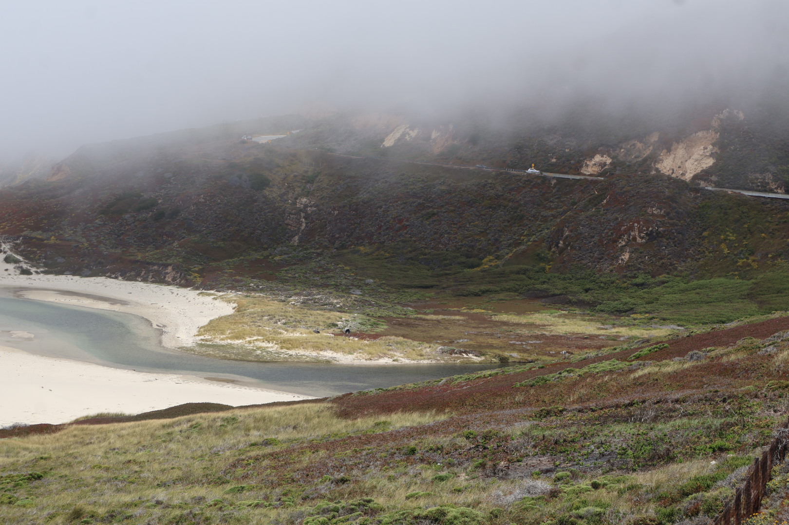
.jpeg)
.jpeg)
One of the places I was most excited to visit was Bixby Creek Bridge(Bixby Bridge). Seeing such a huge bridge standing high above the ocean was incredible. It is around 260 feet above sea level, and I kept wondering how people managed to build something like that in such a difficult location. The bridge itself looked beautiful against the cliffs and the ocean, which is probably why it is one of the most photographed spots in California. After that, we visited Pfeiffer Big Sur State Park. The park was full of giant redwood trees. Standing next to them was amazing because they are so tall and have been around for hundreds and even thousands of years. Pictures really don't do them justice. But honestly, one of the best parts of Big Sur was the drive itself. Driving along the coastal road with the ocean on one side and mountains on the other was such a beautiful experience. Everywhere we looked there was a different view cliffs, forests, beaches, and the endless blue ocean. The whole drive felt so fresh and peaceful. The weather, the views, and being surrounded by nature made it one of my favorite parts of the trip. Big Sur is one of those places where the journey is just as enjoyable as the destination.

Point Reyes
Wind, Waves & a Lighthouse


Point Reyes was one of the coolest places we visited during the trip. The weather was amazing cold, cozy, and very windy. In fact, the wind was so strong that sometimes it felt like it could push us back while walking. The main attraction was the lighthouse. To reach it, we had to go down around 850 stairs on one side. Looking at all those stairs from the top itself was crazy! But the views along the way made it worth it. I really liked the lighthouse and the whole area around it. Standing there with the ocean in front of us, strong winds blowing, and cliffs all around felt like something straight out of a movie. The drive and the views were beautiful, but what I will remember most is the weather. The cool breeze, the sound of the waves, and the powerful winds made the experience feel very different from the other places we visited. It was definitely one of those places where the journey and the atmosphere were just as memorable as the destination itself.

Half Moon Bay
Random Plan

.jpeg)
.jpeg)
Our trip to Half Moon Bay was actually a random evening plan. We left around 5 PM and reached there at about 7:15 PM. The drive itself was really nice. The road was covered with tall trees on both sides, and for some time it reminded me of the Big Sur route. The only difference was that instead of the ocean, there were forests and giant trees all around. When we reached the beach, we put down our chairs and mat and just sat there for a while. The weather was nice, and it felt good to just relax and listen to the waves. I clicked a lot of photos there, especially because it was almost sunset time and the lighting was so good. Every picture was coming out amazing. You can definitely call me a photoholic! We were hoping to see the sunset, but since it was summer in California, the sun sets starts around 8:30 PM and we had to leave before that. Even though we missed the sunset, the beach looked beautiful and the view was worth the drive. After that, we had dinner at an Indian restaurant and then went to Palo Alto for ice cream. We visited Salt & Straw, and there was literally a line outside the store even at around 10 PM. They only had a couple of eggless options, but both were really good. The texture of the ice cream was what stood out to me the most ,very smooth and creamy. It was probably one of the best ice creams I had during the trip. It was a short trip and not something we had planned in advance, but I'm glad we went. The drive, the beach, and of course the ice cream made it a really nice evening.
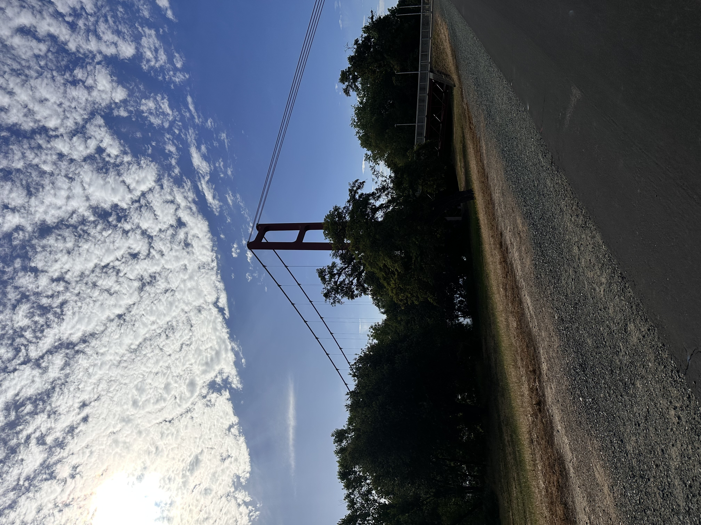
Sacramento
A short stop, but a meaningful one.

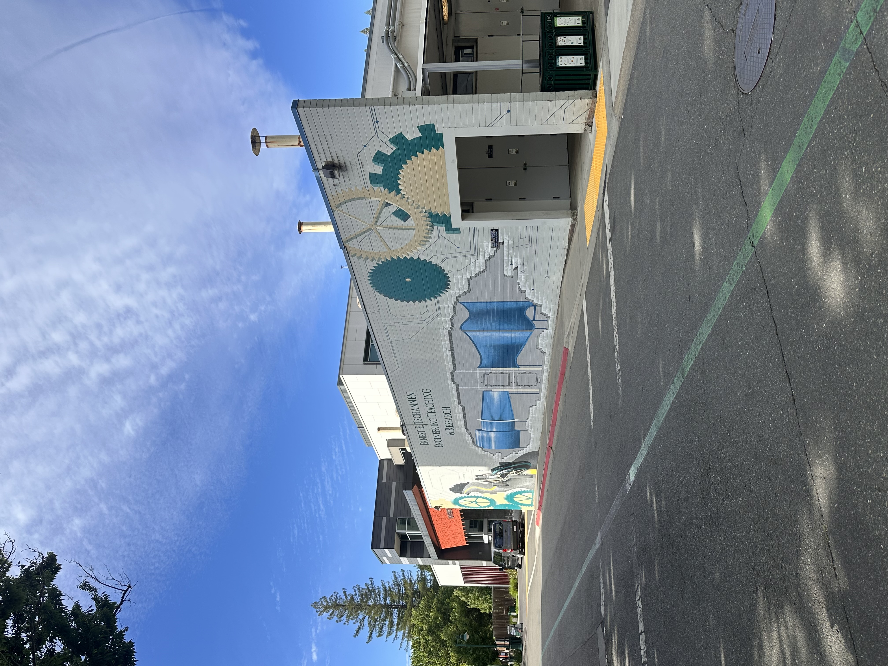
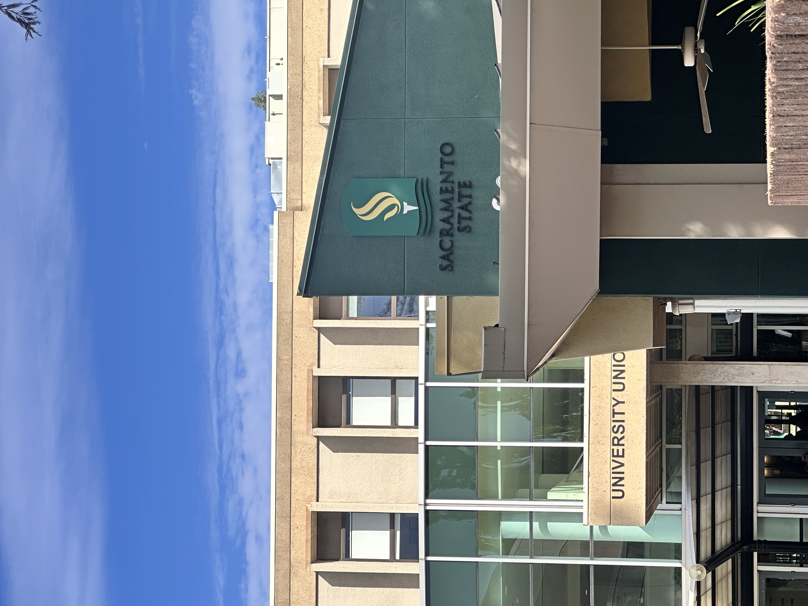
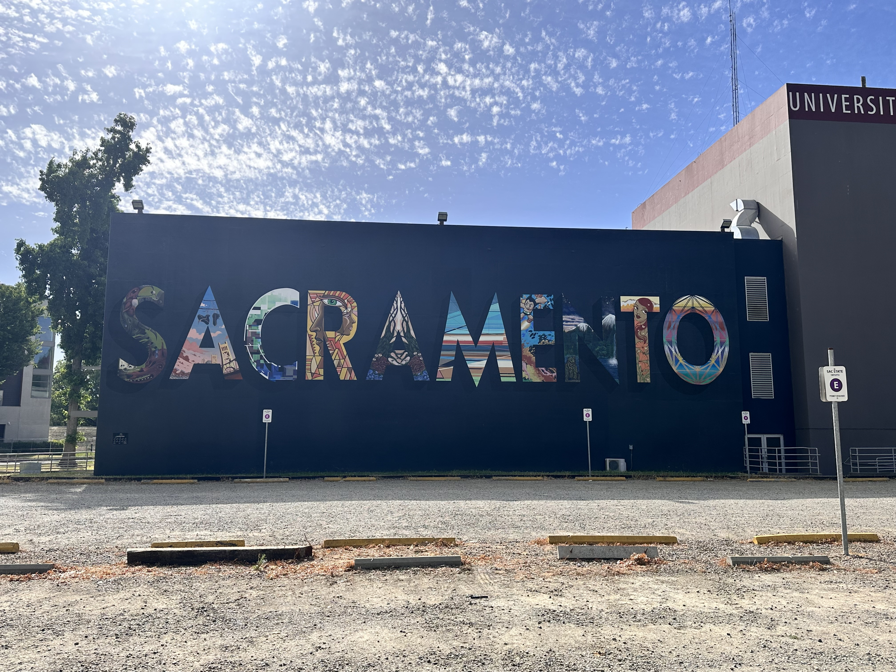
While travelling to Lake Tahoe, we made a stop in Sacramento, the capital of California. It was on our route, but the main reason we wanted to visit was because my sister completed her Master's degree from California State University, Sacramento. We visited her university, and she showed us around the campus. As we walked through different buildings, she told us about her classes, where she used to spend most of her time, and even the places where she lived during her studies. Listening to all her stories while actually seeing those places made the visit feel much more personal. The visit was also a little emotional for me. We couldn't attend her graduation, so being able to see the university where she spent such an important part of her life felt special in a different way. It almost felt like we were getting a small glimpse into her journey there. One thing that caught my attention was a small replica of the Golden Gate Bridge on the campus. It wasn't very big, but it looked beautiful and was something I wasn't expecting to see. Sacramento was only a short stop during our journey, but because of the connection with my sister's student life, it ended up being much more memorable than I had imagined.

Lake Tahoe
Lake Tahoe: 6,225 ft above Sea level


Although I visited the main spots last year, this time I explored the natural scenery of Lake Tahoe🌊 Lake Tahoe is one of the most beautiful places, at around 1,657 ft above sea level, surrounded by mountains! When we were visiting, the winds were very high, due to which our kayaking plan got canceled, which gave me some disappointment as it was my first time doing that. But the view was amazing, which completely cut off that disappointment! We visited many points like Cave Rock, Nevada Beach, Logan’s Viewpoint, Pope Beach, and many more. On that trip, we explored many other small viewpoints as well, and one point became my favorite. The view from that point was insane. I loved it! We had our lunch at Base Camp Pizza, which is famous, and it was really good. I liked their pizza and had a pinacolada which tasted really good. Then we again started our journey to viewpoints and beaches. After that, we searched some gift shops to buy magnets, as I am very fond of them! And bought coffee. After that, we headed to Sacramento (from where my sister graduated with her postgraduate degree) to visit a Jain temple, and after that, we returned home!!!🫶🏻
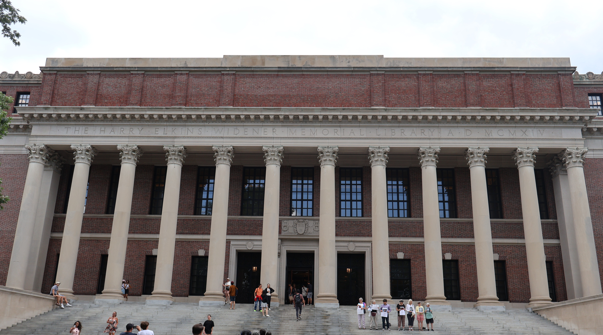
Universities
🎓 Universities Visited


.jpeg)
.jpeg)
.jpeg)
During my trip, I also had the opportunity to visit a few well-known universities across the United States. As a student myself, walking through these campuses was exciting because each university has its own history, culture, and atmosphere.
- Northeastern University(NEU), Boston
- Massachusetts Institute of Technology (MIT), Cambridge
- Harvard University, Cambridge
- California State University, Sacramento (CSUS)
- Stanford University, Stanford
Each campus felt different in its own way. Some impressed me with their historic architecture, while others stood out because of their innovation, research culture, and student life. Visiting these universities gave me a glimpse into different academic environments and made me imagine what it would be like to study there. Among them, California State University, Sacramento was especially meaningful because my sister completed her Master's degree there. Walking around the campus while hearing her stories made the visit much more personal and memorable.